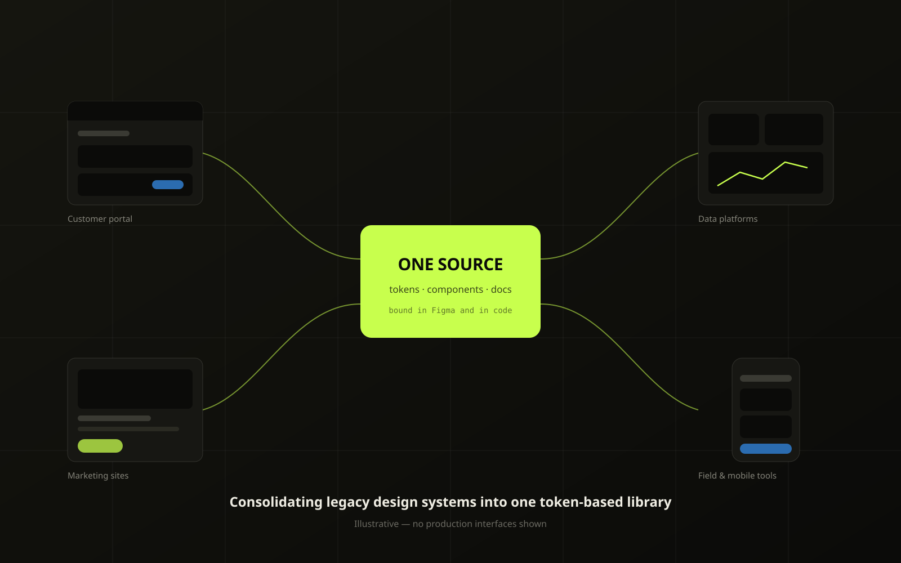
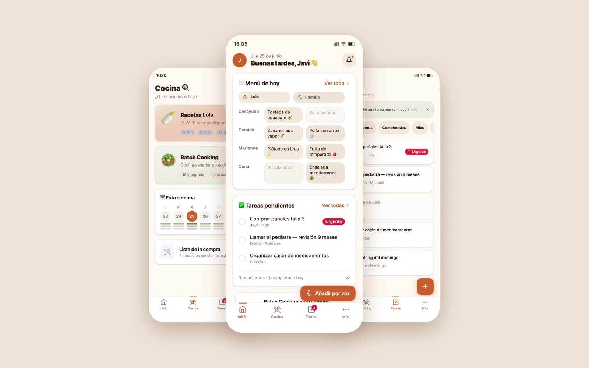

Design that ships & performs
I'm Javi — Senior Product Designer specialized in design systems, connecting Product, Design and Engineering to ship scalable digital experiences. 10+ years across SaaS, e-commerce and TV apps.
Explore the workResults with receipts
more operational efficiency in the Bolttech supply-chain SaaS
Measured against the manual Excel process it replaced.
Bolttech · 2022–23 Read the case →conversion lift after redesigning Desigual's product card
A/B tested against the previous product card.
Desigual · 2013–16 Read the case →retention increase on MotoGP VideoPass renewals
Renewal rate before vs. after the redesign.
Dorna Sports · 2019 Read the case →faster access times across Bolttech partner portals
Time-to-task from portal analytics, pre/post launch.
Bolttech · 2021–23 Read the case →Case studies

2025–nowConsolidating Legacy Design Systems into One Token-Based Library
One token-based library replacing several legacy systems Design system · BASF Digital Solutions 2021–23
2021–23
Contributing to Bolttech's Design System: Components and Tokens
Components and tokens for the first shared library Design system · Bolttech 2022–23
2022–23
SaaS Supply Chain Service
40% more operational efficiency SaaS · Bolttech
OngoingFamilyHub: Designing and Building a Self-Hosted Family Platform
One design system across PWA, iOS and Android PWA & Native apps · Personal projectComplex in, clear out
I help teams build better digital products through scalable design systems, reusable component libraries and user-centered experiences.
My role combines UX design, design system strategy, stakeholder collaboration and design operations — ensuring consistency across products while accelerating delivery for both designers and developers.
- 01Design systems & tokens
- 02Component libraries & docs
- 03UX standards & guidelines
- 04Product & UX/UI design
- 05Design-to-dev workflows
- 06Cross-team adoption & DesignOps
How I work
Six steps, one loop. Every project starts with the problem and ends with measured results — then iterates.
Find the real problem
The brief is rarely the problem. I start by asking who is actually stuck and what they do instead today — the workaround usually tells you more than the request did.
Draw the smallest version
I'd rather ship a narrow thing that works than a complete thing that waits. Scope is a design decision, so I make it deliberately and early.
Go and look
Interviews help, but watching someone work helps more. Most of what I've fixed came from seeing a workaround nobody had thought to mention.
Build something to react to
Prototypes beat descriptions. When the question is about density or rhythm I build it in HTML, because you can't feel a layout from a static frame.
Test before it's finished
Testing a design you're already attached to is theatre. I put it in front of people while changing it is still cheap.
Measure, then say so
A number only counts if you can say how it was measured. Everything on this site comes with its source — that's the point of the whole thing.
Team feedback
Javier and I worked together at Inari for 9 months, collaborating on shared design system issues. He's an experienced designer with great ideas and deep Figma expertise. His friendliness, adaptability, and positive attitude make him a pleasure to work with.Feedback from my team
Javier is a reliable, creative designer who delivers user-centered experiences that drive business goals. A proactive team player, he collaborates seamlessly with teams and takes on challenges with enthusiasm.Feedback from my team
Javi is an exceptional teammate with remarkable Figma skills and expertise in creating mockups. His coordination with front-end teams is outstanding, and his dedication and teamwork make him an invaluable asset to any team.Feedback from my team